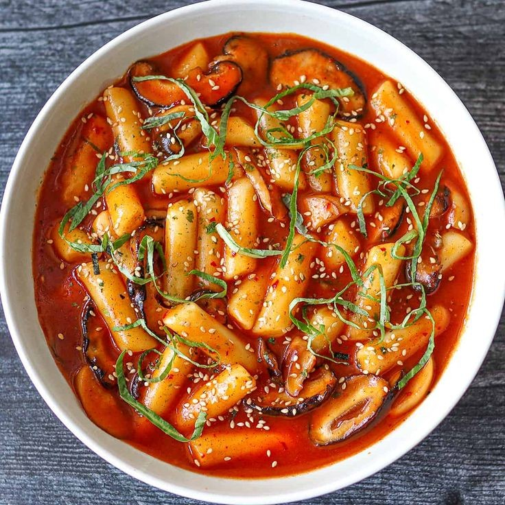
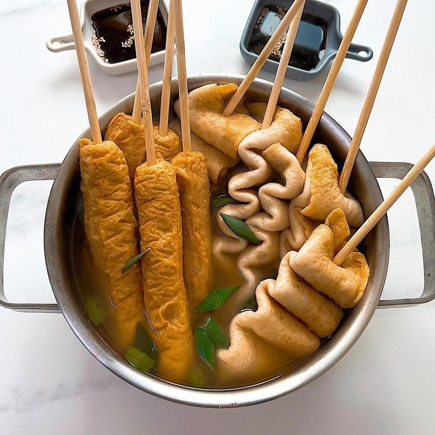
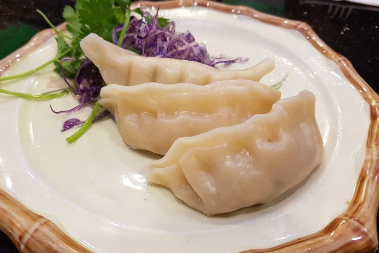

| TTEOKBOKKI | ODENG | ||||||||||||
|---|---|---|---|---|---|---|---|---|---|---|---|---|---|
| TTEOKBOKKI 떡볶이 Kue beras Korea dengan saus manis pedas 25.000 |
ODENG/EOMUKGUK 오뎅 / 어묵국 Sup bakso ikan dengan kaldu ikan khas Korea (tidak pedas) 15.000 |
||||||||||||
| HOT TTEOKBOKKI 핫떡볶이 Kue beras Korea dengan saus manis esktra pedas 27.000 |
MAEUN ODENG 맑은오뎅 Sup bakso ikan dengan kaldu ikan khas Korea (ekstra pedas berempah) 18.000 |
||||||||||||
| NUCLEAR TTEOKBOKKI 핵떡볶이 Tteokbokki level paling pedas 30.000 |
|||||||||||||
|  |
 |
||||||||||||
| MANDU (2 pcs) 8.000 cocok untuk tambahan ramyun, rabokki atau bokkeumyun |
 |
| EXTRA CHEESE 5.000 cocok untuk tambahan korean chicken, tteokbokki, ramyun, rabokki, bokkeumyun atau kimchi bokkeumbab |
|
| NASI PUTIH | 5.000 |
| CHILI POWDER | 2.000 |